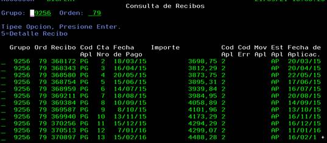
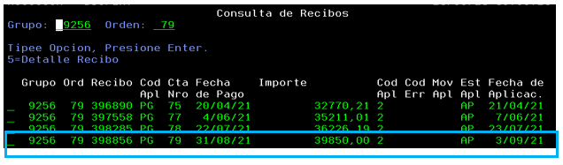
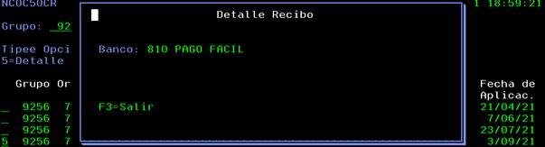

Consulta de Estado de Cuenta
AS400 | CUB | 37 Consulta de Recibos *

Con AVPG avanzar hasta la fecha del pago que queremos ubicar
Podemos verificar que:
- El último pago lo realizó el 31/8 y se aplicó el 3/9 una vez que fuera emitida la cuota del mes (SIEMPRE EL 1°)

- Dentro del mismo menú podemos utilizar la opción 5 para verificar el banco dónde efectuó el pago. Todos los bancos/tarjetas que visualicemos con la leyenda “VOPA” son pagos realizados mediante la web.

Dentro de este menú se pueden verificar la aplicación de pago por código de aplicación o concepto, a saber:
- AC, adelanto de cuotas
- AX, alícuota extraordinaria
- PG, pago de cuota
- AN, adelanto de diferimiento
- LC, licitación
- RV, reversión tarjeta. Si el cliente pide un reverso a la TDC, se reversará del plan el ultimo pago total o parcialmente hasta completar el importe que tenemos que descontar.
- RH, rechazo no procesable. Pagos que se encuentran pendientes de análisis o bien están reclasificados para ser devueltos
- RA, pago ingresado post cancelación del plan.
Y el estado de aplicación:
- AP, aplicado
- DV, reclasificado para devolver
- BA, devuelto
- En blanco, pendiente de aplicar. Aún no corrió el proceso de aplicación de pagos nocturno.
- PE, pendiente. Aplica para rechazos